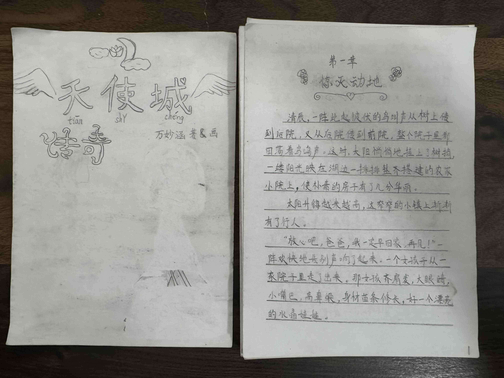
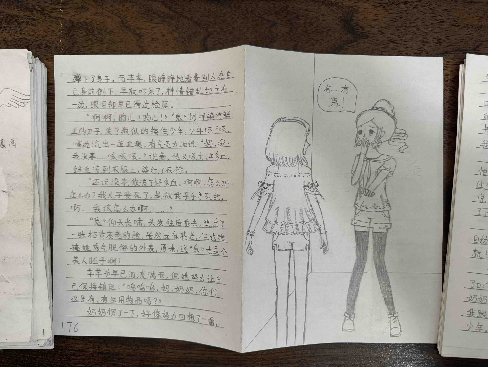

{% include "base1.html" %}

<body>
    <section class="sub-header2">
        <nav>
            <a href="index.html"></a>
            <div class="nav-links" id="navLinks">
                <i class="fa fa-times" onclick="hideMenu()"></i>
                <ul>
                    <li><a href="/">Home</a></li>
                    <li><a href="/about">About-Me</a></li>
                    <!--<li><a href="/academic">Academics</a></li>-->
                    <li><a href="/award">Awards</a></li>
                    <li><a href="/athletic">Athletics</a></li>
                    <li><a href="/dubbing">Voice-Acting</a></li>
                    <li><a href="/teaching">My-Teaching</a></li>
                    <li><a href="/book">My-Book</a></li>
                    <li><a href="/volunteering">Volunteering</a></li>
                    <li><a href="/clubs">Clubs</a></li>
                    <li><a href="/work">Working-Experiences</a></li>
                </ul>
            </div>
            <i class="fa fa-bars" onclick="showMenu()"></i>
        </nav>

        <h1>My Book</h1>
    </section>
    {% include "base3.html" %}
    <section class="volunteer">
        <h1>Book - From Childhood Dreams to Timeless Pages</h1>
        <div class="row">
            <div class="volunteer-col">
                
                
                
            </div>
        </div>
    </section>


    {% include "base2.html" %}